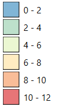
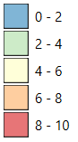
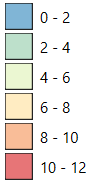
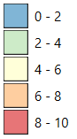

Mapa edukacji we Wrocławiu
Lat: --, Lng: --
Legenda:
Granice Miasta Wrocław
Granice osiedli
Przedszkola
 Szkoły/Zespoły szkół
Szkoły/Zespoły szkół
Szkoły wyższe
Biblioteki
Szkoły językowe
Internaty/Bursy/Domy studenckie
Liczba przedszkoli na dane osiedle

Liczba szkół/zespołów szkół na dane osiedle

Granice Miasta Wrocław
Granice osiedli
Przedszkola
Szkoły wyższe
Biblioteki
Szkoły językowe
Internaty/Bursy/Domy studenckie
Liczba przedszkoli na dane osiedle

Liczba szkół/zespołów szkół na dane osiedle
